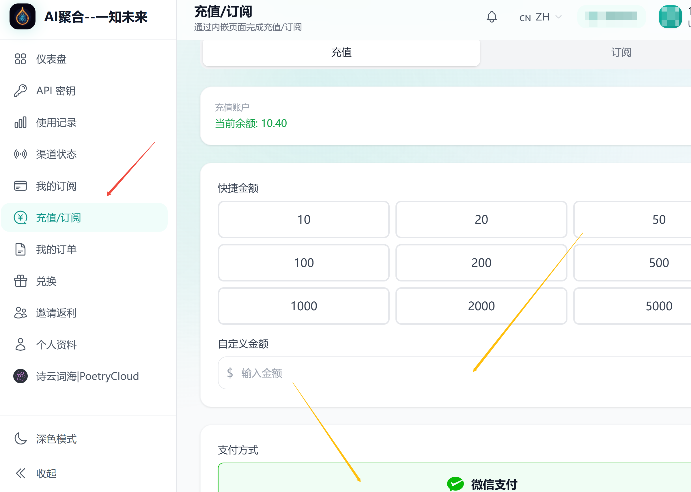
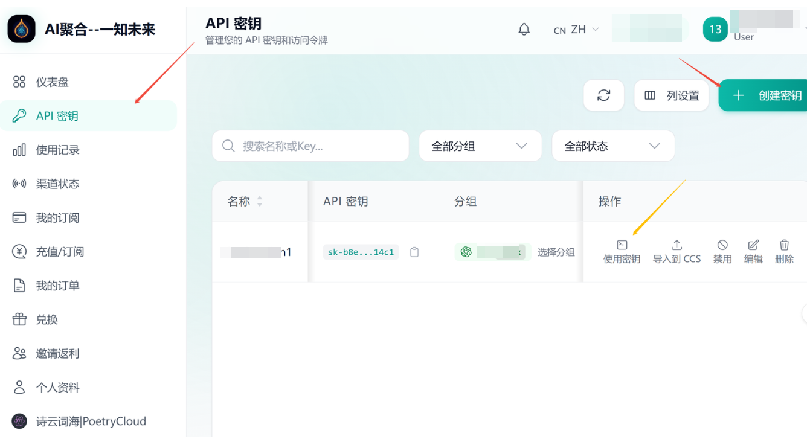
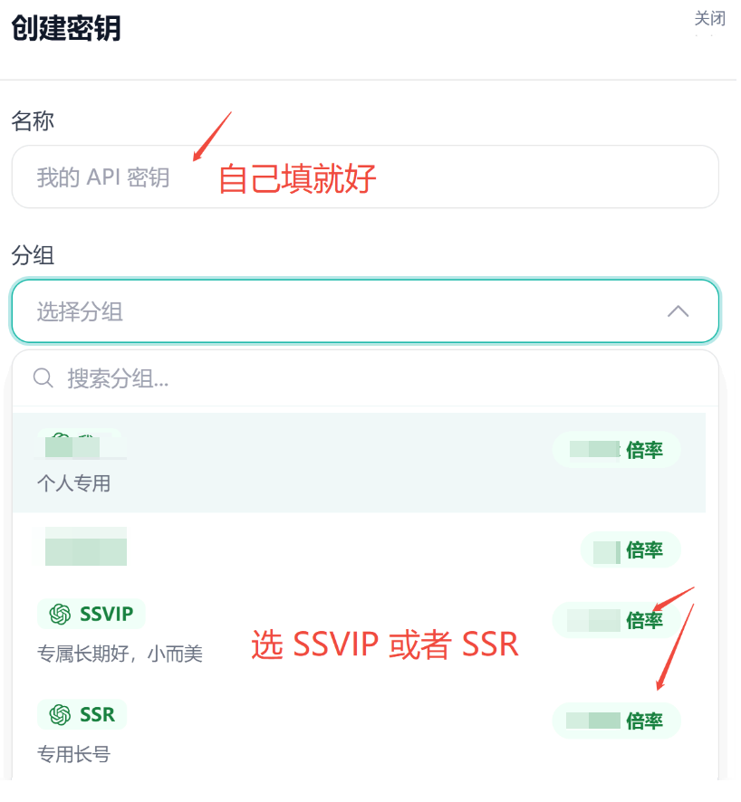
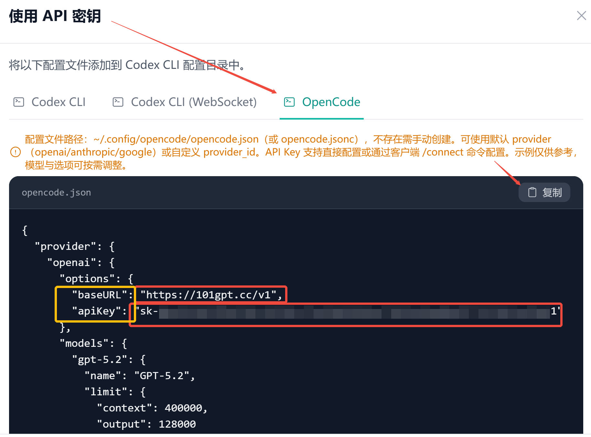
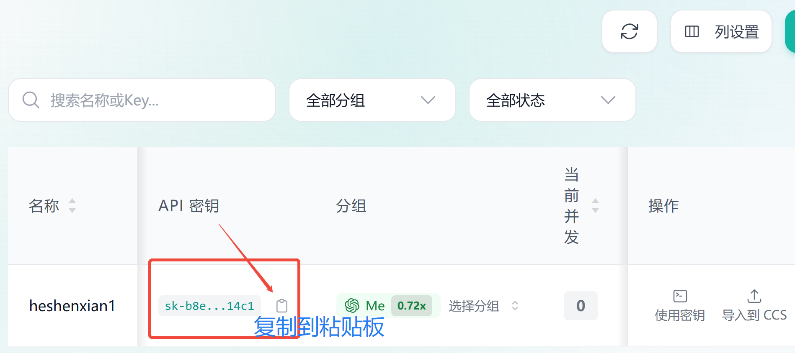
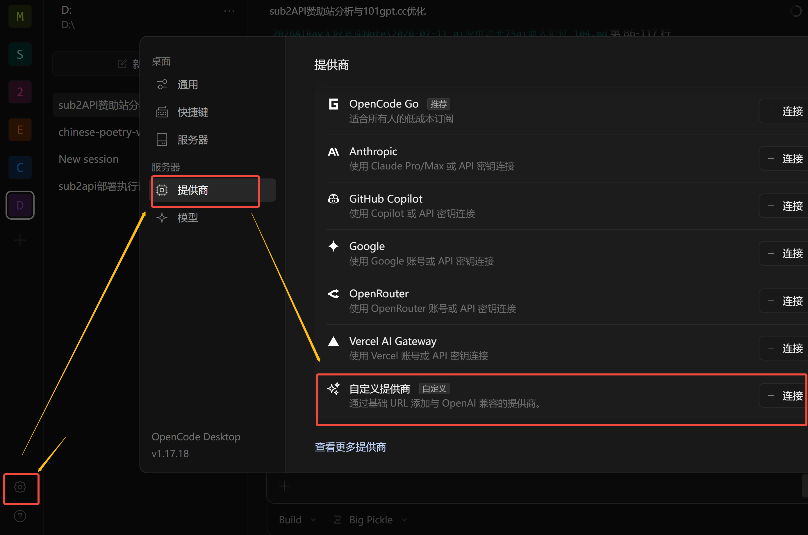
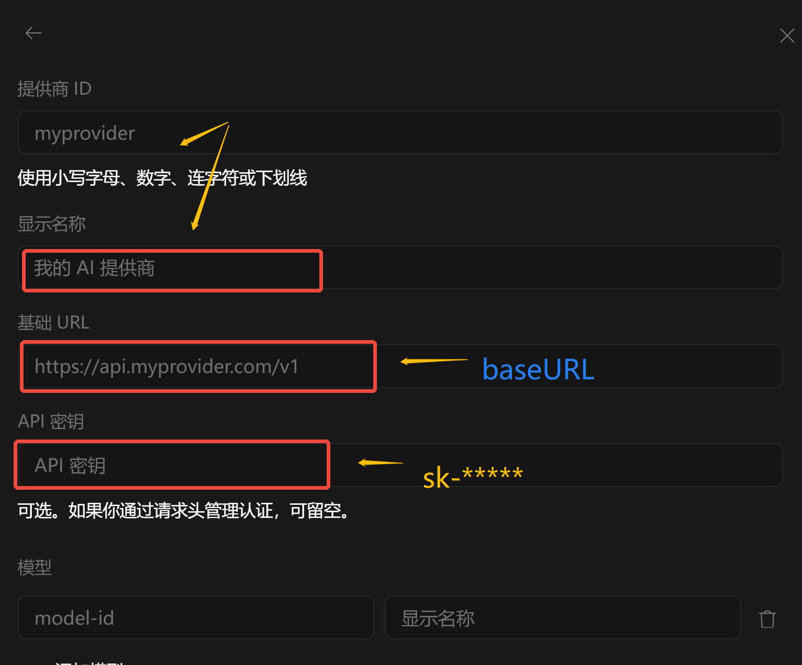
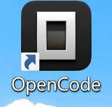
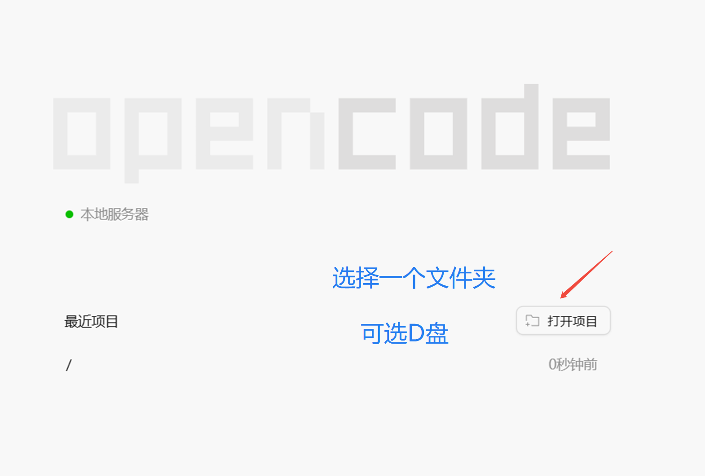
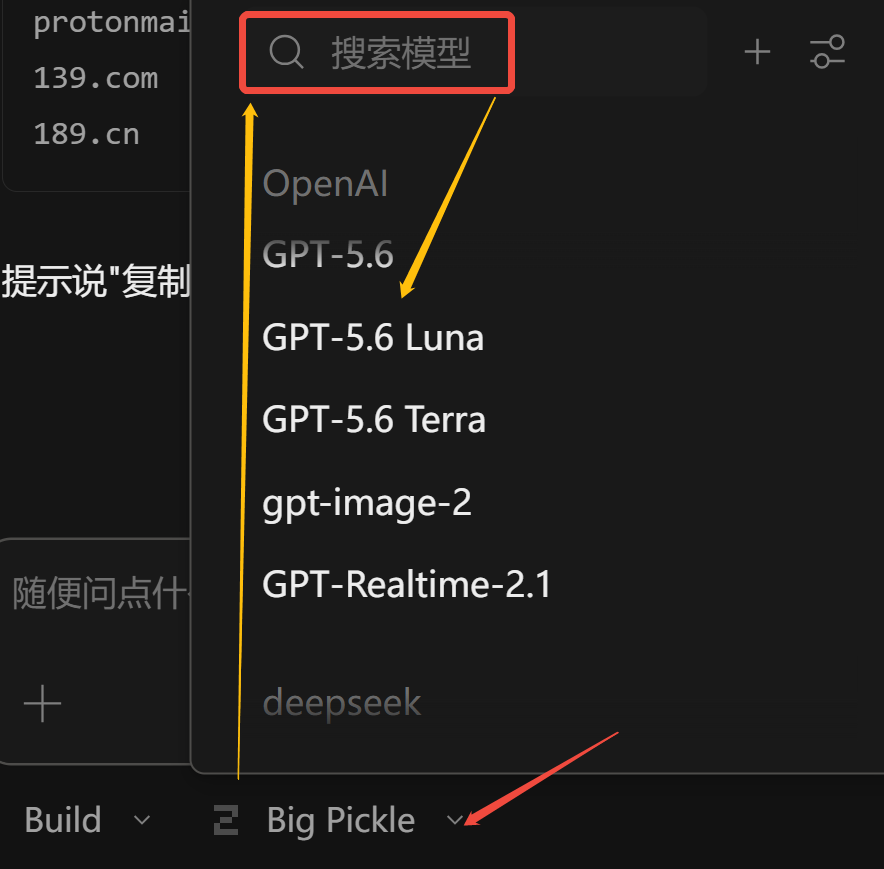

101GPT 模型接入保姆级指南
一知未来 · 从注册到多智能体调用，几分钟内完成
快速四步走：注册 → 充值 → 创建密钥 → 拿到凭证。下方「一、」拿到你的 Base URL 与 API Key 后，即可在任意兼容 OpenAI 的智能体中接入 101GPT；如需把 101GPT 接入 ChatGPT / Claude / WorkBuddy / TraeWork 等更多智能体，继续看「二 ~ 五、」。
一、101GPT API 获取（注册 · 充值 · 创建密钥）
兑换或充值
有兑换码填码兑换，或者按需充值或订阅套餐。

根据控制台展示的模型价格充值。余额按实际调用量扣除，余额可跨月使用。
创建密钥
进入 API Key 页面创建密钥，并设置名称、选好分组，确定创建。


开始调用
使用密钥，复制你的 Base URL 和 API Key —— 这是你调用 101GPT 最重要的两样信息。

这个代码中最重要的信息，就是你的 apiKey，记得不要泄露给其他人哦。而 baseURL 对应就是大模型供应商链接 https://101gpt.cc/v1
你在这里也可以直接复制保存你的 apiKey。

拿到这两样信息后，即可在任意兼容 OpenAI 的智能体中接入 101GPT（OpenCode、WorkBuddy、TraeWork、DeepSeek Harness 等），具体配置方法见下方「五、主流智能体配置方法」。
📌 补充：手动添加供应商与 API Key
调用你的 API，你手上有两个关键信息：
- 模型供应商链接 baseURL：https://101gpt.cc/v1
- 你要自己保管好的 API 密钥 apiKey："sk-*" 开头的字段。
手动添加供应商：左下角 ⚙️ 设置里点开，再选择「供应商」→「自定义供应商」。

供应商信息如供应商ID、现实名称可以你自己填，比如咱们站你可以填 101gpt。而基础URL、API密钥上面都提到了。模型部分可填可不填。由于 OpenCode 是智能体，建议你遇事不决，就问它解决是聪明办法。

二、ChatGPT(Codex) 安装方法
从 Windows 应用商店（Microsoft Store）搜索并下载 ChatGPT（原名 Codex）。
从 Windows 菜单里找到 Microsoft Store 并打开，在界面上搜索 ChatGPT，如下图：
说明：近期 ChatGPT 更新频繁，建议大家使用最新版。
安装好先别打开，配置好 API Key 以后再进入（配置方法见下一节「三、」）。
三、ChatGPT(Codex) 配置方法
有两种方式可以配置 ChatGPT（以下 2 选 1 即可）：
- 一种是借助工具 CC Switch，同时使用多种模型（例如同时使用 GPT、Claude、Gemini、DeepSeek），方法简单，建议采用。
- 另一种是手动配置方法，自己编辑 ChatGPT 的配置文件，只用 GPT 模型，方法稍微复杂。
方式 1 —— CC Switch 配置方法（推荐）
CC Switch 官方网站下载：https://ccswitch.io/zh/download
安装并运行 CC Switch，在界面点击 ChatGPT 图标（选择目标应用为 ChatGPT），再点击「增加」图标，如下图：
选择「自定义配置」后，页面往下翻，按图示填写相关信息：
供应商名称：101gpt
API Key：从 https://101gpt.cc 获取的，以 “sk-” 开头，不带引号
API 请求地址（Base URL）：https://101gpt.cc/v1
添加后回到主界面，按「启用」按钮，重新启动 ChatGPT(Codex) 即可。
利用 CC Switch 可以配置多个 API 来源进行自由切换模型，支持国内外主流大语言模型。
方式 2 —— 手动配置方法
- 操作配置文件：打开并登录 101gpt.cc，左边菜单栏选择「API 密钥」，再选择其中一个密钥，点击「使用密钥」按钮，按下图示意进行选择并复制。
- 按键盘 Win + R，输入 notepad %userprofile%/.codex/config.toml，按回车。
- 用记事本打开配置文件以后，将刚刚从 101gpt.cc 复制过来的内容，粘贴到配置文件的最前面，保存（Ctrl+S）。
- 操作密钥文件：切换回 101gpt.cc 网页，在使用 API 密钥界面点击「复制」按钮复制密钥。再按 Win+R 输入 notepad %userprofile%/.codex/auth.json 打开密钥文件，将复制的密钥粘贴进去并保存。
- 在 Windows 菜单中找到并打开 ChatGPT 就可以用了。
四、Claude 安装和配置方法
- 下载 Claude：在 Windows 中打开 Microsoft Store 并搜索 Claude，或者到官网下载（claude.com）。
- 安装 CC Switch：下载地址 https://ccswitch.io/zh/download。
- 在 CC Switch 中配置 Claude Desktop（Claude Code 方法类似）：选择 Claude Desktop，再添加供应商，在「添加供应商」界面选择「自定义配置」。
- 其它参数配置（红色框中必填）：API Key 是从 101gpt.cc 站点获取的 API Key（创建 API Key 时必须选 Claude 类分组），再点击保存即可。
- 在 Windows 中打开 Claude Desktop（或 Claude Code）就可以使用了。
供应商名称：101gpt
API Key：从 https://101gpt.cc 获取，创建时选 Claude 类分组，以 “sk-” 开头
API 请求地址（Base URL）：https://101gpt.cc/v1（OpenAI 兼容接口；若用 Claude Code 原生协议，则为 https://101gpt.cc，不带 /v1）
方式二 —— Claude Code 命令行配置（环境变量）
如果你用 Claude Code（命令行工具），101GPT 走 Anthropic 原生协议接入，Base URL 不带 /v1。在终端（或写入 ~/.bashrc / ~/.zshrc / Windows 用户环境变量）设置以下环境变量：
export ANTHROPIC_BASE_URL="https://101gpt.cc"
export ANTHROPIC_AUTH_TOKEN="sk-2b****"
export CLAUDE_CODE_DISABLE_NONESSENTIAL_TRAFFIC=1
ANTHROPIC_BASE_URL：填 https://101gpt.cc（没有 /v1 后缀，这是 Anthropic 原生接口地址）。ANTHROPIC_AUTH_TOKEN：填从 101gpt.cc 获取的 API Key（创建时必须选 Claude 类分组，以 “sk-” 开头）。CLAUDE_CODE_DISABLE_NONESSENTIAL_TRAFFIC=1：关闭 Claude Code 向 Anthropic 官方发送的非必要遥测/心跳流量，确保请求全部走 101GPT。
保存后在终端重新加载配置（或新开终端），运行 claude 即可使用 101GPT 提供的 Claude 系列模型。
五、主流智能体配置方法
以下均为「按需选配」。无论接哪个智能体，你都需要先在
101gpt.cc 创建好 API Key（按所用模型家族选对应分组），再填入对应工具的 Base URL 与密钥。
1、配置 WorkBuddy（按需选配）
腾讯 WorkBuddy 下载地址：https://www.codebuddy.cn/work/。在对话框右下方选择「配置自定义模型」，在对话框里选择「+添加模型」。
在「添加模型」或「编辑模型」对话框中输入以下信息：
提供商：自定义 / Custom
接口地址（不能填错）：https://101gpt.cc/v1
API Key：填入从 101gpt.cc 获取的 API 密钥，以 “sk-” 开头
模型名称：可填 OpenAI 主流模型，例如：
gpt-5.6-sol gpt-5.6-terra gpt-5.6-luna gpt-6-astra gpt-6-sol gpt-6-luna gpt-6.1-sol gpt-6.1-terra
（也可填 101gpt 已接入的 claude-* / gemini-* / grok-* / deepseek-* 等模型）
配置好以后，可以在 WorkBuddy 中选择该模型进行交互。
2、配置 OpenCode（按需选配）
下载与安装：前往 OpenCode 官网 https://opencode.ai/zh 下载对应系统版本，安装并启动 OpenCode。
初次启动后，「打开项目」就是选一个文件夹📂或者存储盘就好，智能体对具体的范围发挥智能，不会额外做功。小何在 Windows 电脑通常先选了 D盘，而苹果 Mac 通常选择 Download 文件夹📂。


方式一：一键接入（推荐）
在 101gpt 控制台「使用密钥」中复制配置代码（见上方「一、」步骤 04），直接 Ctrl+V 粘贴给 OpenCode 对话框，让它去配置好供应商 API，然后关闭 OpenCode，重新打开它。
粘贴后，你在「选择模型」中就能看到 OpenAI 家的一流 AI 大模型了，比如 gpt-5.6 系列、gpt-6 系列。

用上 OpenCode，开始用上你的 AI数字员工，让它给你干活吧！
方式二：手动添加自定义提供商
在 OpenCode 主对话框下方选择模型下拉列表，选择「管理模型」，在管理模型对话框中选择「+连接提供商」，再选择「自定义 OpenAI 兼容提供商」。
在自定义提供商对话框中输入以下信息：
提供商 ID：101gpt
显示名称：101GPT
基础 URL（不能填错）：https://101gpt.cc/v1
API 密钥：从 101gpt.cc 获取的 API 密钥（以 sk- 开头）
模型：填入常见模型名称，例如：
gpt-5.6-sol gpt-5.6-terra gpt-5.6-luna gpt-6-astra gpt-6-sol gpt-6-luna gpt-6.1-sol gpt-6.1-terra
（及 claude-* / gemini-* / grok-* / deepseek-* 等 101gpt 已接入的模型）
最后点击「提交」即可。配置好以后，在对话框下方就可以选择或搜索模型，在顶部搜索框中输入 “101gpt” 即可快速找到刚配置好的模型。
3、配置 DeepSeek Harness（按需选配）
DeepSeek Harness 下载地址：https://www.deepseek.com/harness/。在配置页面，先在界面左下角点击「设置」，在设置对话框里选择「模型」，点击「添加提供方」。
提供方：选择 openai 即可
API 密钥：以 “sk-” 开头的密钥，从 101gpt.cc 网站获取
自定义设置 → API 地址：https://101gpt.cc/v1
已自定义模型目录：填入常见 GPT 模型名称，例如：
gpt-5.6-sol gpt-5.6-terra gpt-5.6-luna gpt-6-astra gpt-6-sol gpt-6-luna gpt-6.1-sol gpt-6.1-terra
4、配置 TraeWork（按需选配）
TraeWork 下载地址：https://www.trae.cn/。在模型对话框页面，点击模型下拉列表，在菜单中选择「添加模型」，在「模型」界面中点击「添加模型」。
在「添加模型」界面中选择「自定义模型」，在「自定义模型」界面中输入以下信息：
API 格式：OpenAI Chat Completions
自定义请求地址：https://101gpt.cc/v1
模型 ID：可写其中之一（gpt-5.6-sol gpt-5.6-terra gpt-5.6-luna gpt-6-astra gpt-6-sol gpt-6-luna gpt-6.1-sol gpt-6.1-terra）
模型展示名称：可以与模型 ID 一致
API 密钥：从 https://101gpt.cc 网站获取的密钥
模型系统：可选 GPT-6 系列
添加完以后，刚才输入的模型出现在模型列表中，可以在此继续增加或者修改；模型设置完成以后，就可以在对话框下面的模型列表中看到 GPT 模型了。
命令行自检（可选）：Windows 下可用命令行测试 101GPT 支持哪些模型：
curl https://101gpt.cc/v1/models -H "Authorization: Bearer 你的API Key"
🧠 补充：思维篇
上面 101GPT 注册与多智能体接入流程应该讲得挺细了。有两点思维转变，会带给你不一样的旅程。
第一个 —— AI first
AI first，AI first，AI first！ 遇事不决，先问 AI。AI 时代，最便捷的解惑决疑的路径就是第一时间问 AI。AI first，电脑问题找 AI，修理 Bug 做批处理找 AI，写文案咨询 AI，做策划问 AI……
第二个 —— 高低搭配，干活不累
AI 也可以有团队，AI 也能相互打配合。让 AI 组队更好为你打工。简单任务问题找普通模型，复杂高智难题找一流模型。
一流模型思考做方案，次流模型细化做执行，这样搭配性价比高。一流模型相当于教授专家和博士生，次等模型就是分级的研究生本科生，还有更次等的相当于高中生初中生。你可以搭配着用找感觉。当然欢迎土豪，就都用最精锐的，也是非常非常爽的😄。
如有售后疑问可咨询客服
WeChat：hexiaoman42